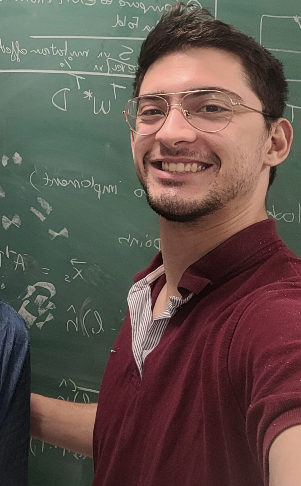

I am a PhD student in Physics at the University of Pennsylvania, working with Professor Andrea Liu. My research sits at the intersection of statistical and soft-matter physics and biophysics, using analytical and computational tools to understand how physical systems learn, adapt, and compute.
I'm interested in the physical limits of computation embedded in matter, and how biological systems such as cells sense and compute. In my PhD I worked on the framework of physical learning, where physical systems iteratively adapt in response to external stimuli, and developed tools to explore the microscopic and spectral consequences of learning in physical systems. Currently, I'm applying some of these tools to elastic network models of proteins and to the question of which mechanisms might be behind global epistasis.